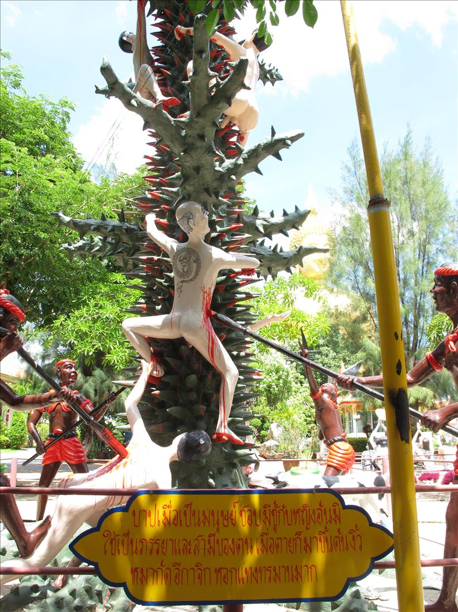
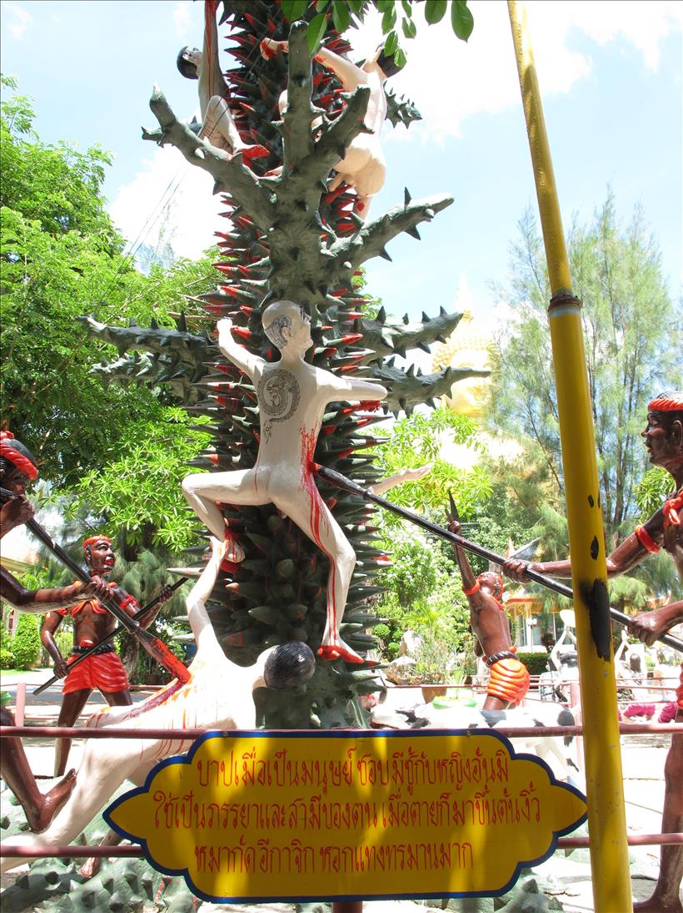

INDIVIDUAL STUDY &
THAI GEOSOCIAL DESIGN
Wat Muang (วัดม่วง จ. อ่างทอง)


อุโบสถ
ล้อมรอบด้วยกลีบดอกบัวสีชมพูขนาดใหญ่ที่สุดในโลก


วิหารแก้ว
ชั้นล่างเป็นพิพิธภัณฑ์วัตถุมงคล และวัตถุโบราณ เปิดเฉพาะวันเสาร์ - วันอาทิตย์ ๐๙.๐๐ - ๑๗.๐๐ น. ชั้นบนประดิษฐ์ฐานพระพุทธรูปศักดิ์สิทธิ์เนื้อเงินแท้ องค์แรกและองค์เดียวที่ใหญ่ที่สุดในประเทศไทย โดยสร้างขึ้น เพื่อเฉลิมพระเกียรติ ในวโรกาสที่ครองสิริราชสมบัติครบ ๕๐ ปี และมีรูปปั้นเกจิอาจารย์ชื่อดังทั่วประเทศ

ตำหนักพระแม่กวนอิมพันมือ
เป็นตำหนักที่ใหญ่ที่สุดในประเทศไทย เป็นองค์ทองเหลืองหนัก ๒๐ ตัน สูง ๘ เมตร มีความศักดิ์สิทิ์ตามคำขออธิฐาน

หลวงพ่อใหญ่
หลวงพ่อเกษม อาจารสุโภ เป็นผู้วางศิลาฤกษ์ ด้วยตัวของท่านเอง เมื่อวันที่ ๙ มีนาคม ๒๕๓๔ และต่อมา วันที่ ๒ พฤษภาคม ๒๕๓๔ ได้ทำพิธีตอกลงเข็มเสาเอก หลวงพ่อเกษมเป็นประธานดำเนินการก่อสร้างร่วมกับลูกศิษย์และประชาชนผู้มีใจบุญทั้งหลายเข้ามาร่วมกันก่อสร้างองค์พระ หลวงพ่อเกษมได้ตั้งนามองค์พระเอาไว้ว่า "พระพุทธมหานวมินทร์ศากยมุนีศรีวิเศษชัยชาญ" พระนามนี้หลวงพ่อเกษมตั้งใจสร้างองค์พระนี้เพื่อพระบาทสมเด็จพระเจ้าอยู่หัว รัชกาลที่ ๙ คณะลูกศิษย์หลวงพ่อเกษมได้พร้อมใจรวมพลังช่วยกันสร้างร่วมกับประชาชนผู้มีจิตศรัทธาด้วยจนการก่อสร้างองค์พระ ได้เสร็จสมบูรณ์ เมื่อวันที่ ๑๖ กุมภาพันธ์ ๒๕๕๐ มีระยะเวลาการก่อสร้างรวมประมาณ ๑๖ ปี และวัดหน้าตักองค์พระได้ ๖๓.๐๕ เมตร ความสูงจากฐานองค์พระ ถึงยอดเกศา วัดได้ ๙๕ เมตร ใช้เงินประมาณ ๑๐๔,๒๖๑,๐๘๙.๖๕ บาท
 



แดนนรก